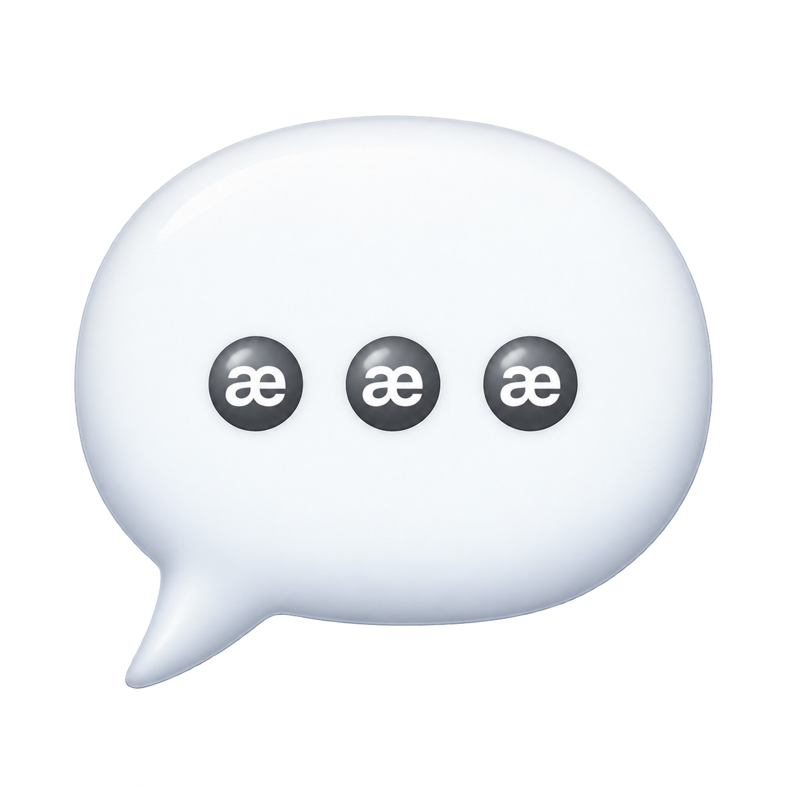

$æææ · LOCAL REFERENCE
The chats
within the chat.
Give a goal a home. Select context for each task. Approve, run, and bring the evidence back.
Runs in this tab with two local text tools. No AI model or external action is connected. Your text clears on reload; an export includes it.
🧾 Evidence ledger
Hash-linked local records; no signed identity or independent attestation. Export retains the head and count to check against later changes.
Begin an intent to create the first record.